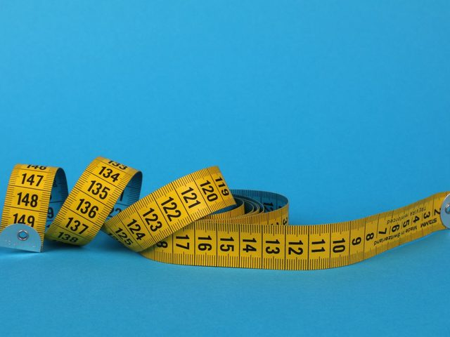
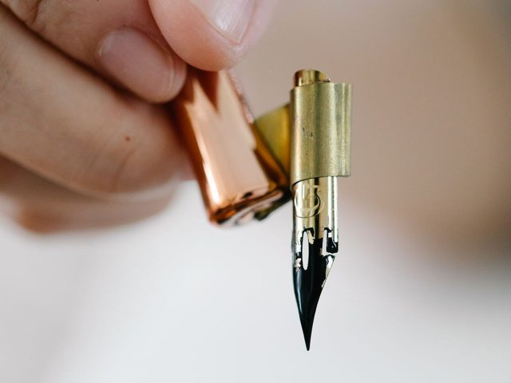
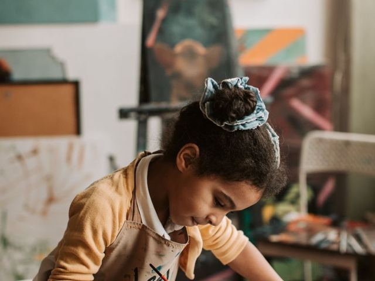
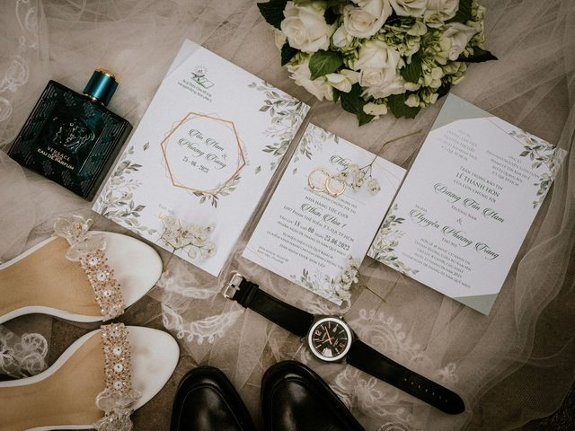
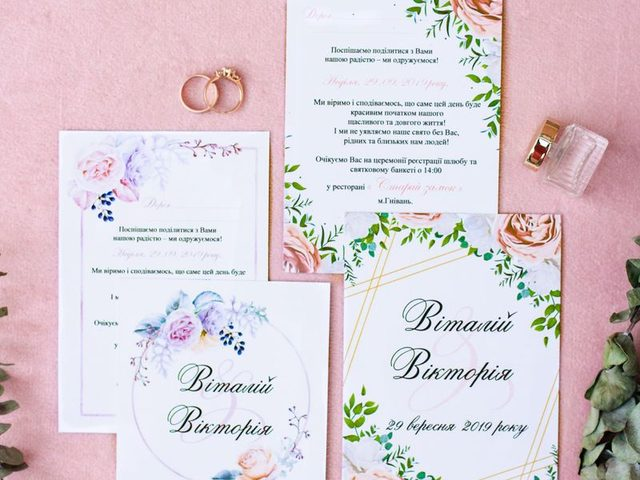

VOCABULARY · WORD UP 單字複習 UNIT 25
I．I 開頭
WORD UP「I」的 48 個字（ice 到 item）。紅色＝要複習，藍色標籤＝WORD UP 標熟記、還要在這裡考對。
共 48 個單字．點 🔊 聽發音

1icen.
冰
不可數
Put some ice in my drink.在我的飲料裡加些冰塊。
2idean.
主意；想法
Good idea! 好主意
That's a good idea!那是個好主意！
3ignorev.
忽視；不理
Don't ignore me!不要不理我！
4illadj.
生病的
= sick；illness 疾病
She is ill in bed.她生病臥床。
5imagen.
影像；形象
The image on the screen is clear.螢幕上的影像很清楚。
6imaginev.
想像
imagination 想像力
Imagine you can fly.想像你會飛。
7impoliteadj.
不禮貌的
polite 有禮貌的
It's impolite to talk with your mouth full.嘴裡有食物時說話很沒禮貌。
8importv./n.
進口
export 出口
Taiwan imports a lot of oil.台灣進口很多石油。
9importancen.
重要性
We know the importance of sleep.我們知道睡眠的重要性。
10importantadj.
重要的
It is important to V
It is important to eat breakfast.吃早餐很重要。
11impossibleadj.
不可能的
possible 可能的
Nothing is impossible.沒有不可能的事。
12improvev.
改善；進步
I want to improve my English.我想提升我的英文。

13inchn.
英寸
約 2.54 公分
The phone screen is six inches.手機螢幕六英寸。
14includev.
包含
The price includes breakfast.價格含早餐。
15incomen.
收入
His income is not high.他的收入不高。
16increasev./n.
增加
decrease 減少
The number of students increased.學生人數增加了。
17independentadj.
獨立的
be independent of
She is an independent girl.她是個獨立的女孩。
18indicatev.
指出；表明
The sign indicates the way to the exit.標誌指出往出口的路。
19individualadj./n.
個人的；個人
Each individual is different.每個人都不一樣。
20industryn.
工業；產業
Taiwan has a strong computer industry.台灣的電腦產業很強。
21influencen./v.
影響
have an influence on
My parents have a big influence on me.我父母對我影響很大。

22informationn.
資訊
不可數；a piece of information
I need more information.我需要更多資訊。
23injuryn.
傷害；受傷
injure 使受傷
He had a leg injury.他腳受傷了。

24inkn.
墨水
The pen is out of ink.這枝筆沒墨水了。
25insectn.
昆蟲
Ants are insects.螞蟻是昆蟲。
26insideprep./adv.
在…裡面
outside 在外面
Let's go inside. It's raining.我們進去吧，下雨了。
27insistv.
堅持
insist on + V-ing
He insisted on paying for dinner.他堅持要請吃晚餐。
28inspirev.
激勵；啟發
Her story inspired me.她的故事激勵了我。
29instancen.
例子
for instance 例如
Some birds, for instance penguins, can't fly.有些鳥，例如企鵝，不會飛。
30instantadj.
立即的；速食的
instant noodles 泡麵
I had instant noodles for dinner.我晚餐吃泡麵。

31instrumentn.
樂器；儀器
Can you play any instruments?你會演奏任何樂器嗎？
32intelligentadj.
聰明的
= smart
Dolphins are intelligent animals.海豚是聰明的動物。

33interestn./v.
興趣；使感興趣
Music is my main interest.音樂是我主要的興趣。

34interestedadj.
（人）感興趣的
be interested in
I'm interested in science.我對科學有興趣。
35interestingadj.
（事物）有趣的
This book is very interesting.這本書很有趣。

36internationaladj.
國際的
Taoyuan International Airport is very busy.桃園國際機場很繁忙。
37Internetn.
網路
on the Internet 在網路上
I found the answer on the Internet.我在網路上找到答案。
38interruptv.
打斷
Don't interrupt me when I'm talking.我在說話時不要打斷我。
39interviewn./v.
面試；訪問
She has a job interview tomorrow.她明天有工作面試。
40introducev.
介紹
introduce A to B
Let me introduce myself.讓我自我介紹一下。
41inventv.
發明
invention 發明（名詞）
Who invented the telephone?誰發明了電話？
42investigatev.
調查
The police are investigating the case.警方正在調查這個案件。

43invitationn.
邀請；請帖
Thank you for your invitation.謝謝你的邀請。

44invitev.
邀請
invite + 人 + to + 活動
I invited Amy to my party.我邀請 Amy 來我的派對。
45ironn./v.
鐵；熨斗；燙衣服
Mom is ironing my shirt.媽媽在燙我的襯衫。
46isv.
是（he／she／it 的 be 動詞）
She is my best friend.她是我最好的朋友。

47islandn.
島
s 不發音
Taiwan is an island.台灣是一座島。
48itemn.
項目；一件物品
How many items are on the list?清單上有幾項？
FOCUS
重點整理
| 說法 | 中文 | 例子 |
|---|---|---|
| interested / interesting | 人感興趣 ／ 事物有趣 | I'm interested in art. ／ an interesting movie |
| import / export | 進口 ／ 出口 | import fruit ／ export rice |
| increase / decrease | 增加 ／ 減少 | increase by 10% |
| insist on + V-ing | 堅持做… | insist on going |
| invite + 人 + to + 活動 | 邀請某人參加… | invite me to the party |
| for instance | 例如（= for example） | For instance, cats and dogs. |
| impolite / impossible | im- 表示「不」 | polite → impolite |
information 不可數，不能說 informations；island 的 s 不發音。